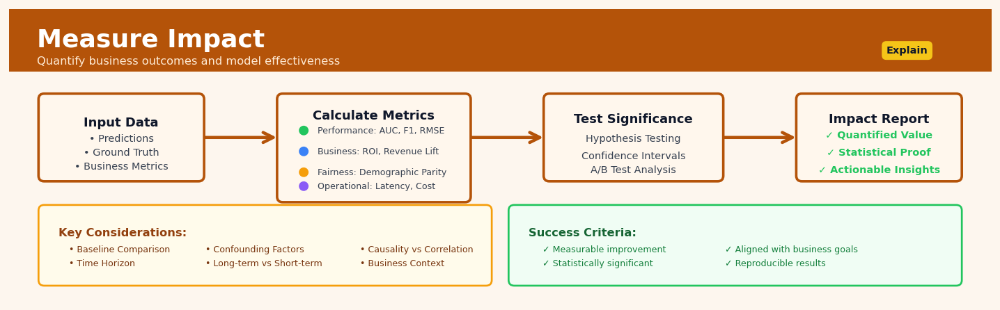

Measure Impact#


The biggest mistake teams make is measuring impact too early, before the model has collected enough real-world data to account for seasonal patterns and user behavior shifts. Always establish a pre-deployment baseline and run your measurements for at least one complete business cycle, whether that's a week for daily patterns or a full quarter for enterprise sales. Remember that statistical significance without business significance is just noise, so anchor every metric to a dollar value or customer outcome that executives actually care about.
The 60-Second Version#
What it does: Measure Impact tells you how much of a change in your outcome was actually caused by your intervention, not by other factors or random chance.
When to use it: Use this when you’ve launched a program, policy, or product change and need to prove whether it worked and by how much.
What you get back: A number that quantifies the true effect of your intervention—such as “the new training increased sales by 12%”—which you can use to justify continuing, expanding, or killing the initiative.
At a Glance
Difficulty |
Advanced |
Typical runtime |
Minutes to hours depending on method and data size |
What you bring |
Data on treated and untreated units, before/after periods, and the outcome you want to measure |
What you get |
A causal effect estimate showing what changed because of your intervention |
Heuristix bucket |
Explain — Causal Analysis & Interpretation |
Correlation is not causation—Measure Impact separates what your intervention actually caused from everything else that happened at the same time.
Learning Objectives#
After reading this chapter, a business user will be able to:
Identify situations where measuring causal impact is necessary versus when simple correlations or trends suffice, such as evaluating marketing campaigns, pricing changes, or product feature launches.
Interpret impact estimates with their confidence intervals and explain to stakeholders whether an intervention achieved its intended effect and by how much.
Decide whether to scale, modify, or discontinue an intervention based on impact measurement results, considering both statistical significance and business materiality.
After reading this chapter, a data scientist will be able to:
Select and implement the appropriate causal inference method (difference-in-differences, synthetic control, regression discontinuity, or matching) based on the data structure and treatment assignment mechanism.
Configure key methodological choices including control group selection, covariate adjustment, and time window specification while understanding their impact on bias-variance tradeoffs.
Validate causal assumptions through falsification tests, check parallel trends, assess common support, and diagnose violations that would invalidate the impact estimate.
Overview#
Measure Impact quantifies the causal effect of a treatment, intervention, or policy change on an outcome of interest, isolating the contribution attributable specifically to the intervention from what would have occurred in its absence. This technique belongs to the family of causal inference methods and draws on frameworks including potential outcomes (Rubin causal model), structural causal models, and quasi-experimental designs. The core purpose is to answer the fundamental counterfactual question: “What difference did this intervention actually make?”
When to Use This#
Use this when you need to measure the effect of a marketing campaign on sales, controlling for seasonality and secular trends that would have affected sales regardless of the campaign.
Use this when evaluating whether a policy change (e.g., a new pricing strategy, operational process, or compliance rule) actually caused the observed shift in key performance indicators.
Use this when you have observational data where treatment was not randomly assigned, but you can identify plausible control groups or exploit natural variation in treatment exposure.
Use this when A/B testing is infeasible due to ethical, logistical, or commercial constraints, and you must estimate causal effects from historical data.
Use this when you need to attribute revenue or conversion lift to specific interventions for budget allocation, ROI calculation, or stakeholder reporting.
Use this when assessing the impact of external shocks (competitor entry, regulatory changes, economic events) on business outcomes using interrupted time series or synthetic control methods.
Do NOT use this when you only have post-intervention data without a valid comparison group or pre-intervention baseline—correlation without a credible identification strategy is not causation.
Do NOT use this when the treatment and control groups differ on unobservable characteristics that affect the outcome, unless you can address this through instrumental variables, regression discontinuity, or difference-in-differences designs.
Do NOT use this when spillover effects are substantial (treatment affects the control group), violating the Stable Unit Treatment Value Assumption (SUTVA).
Do NOT use this when your goal is pure prediction rather than understanding the effect of intervening on a specific variable.
Questions This Answers#
Evaluating Past Decisions and Initiatives#
Did that Q3 marketing campaign actually drive the 12% revenue increase, or would it have happened anyway?
We spent $2M on the new sales training program—how much additional revenue can we attribute directly to that investment?
After rolling out free shipping last year, did it really boost customer retention, or were other factors at play?
The competitor dropped prices in March and our sales fell—how much of that decline was actually caused by their pricing move versus seasonal trends?
We opened five new stores in the Midwest—what portion of our regional growth came from those locations versus our existing stores just performing better?
Deciding What to Do Next#
Should we expand the loyalty program nationwide, or was the 8% lift we saw in the pilot markets just a fluke?
If we cut our digital ad spend by 20%, how much revenue would we actually lose?
We’re debating between investing in customer service improvements or product features—which one will have a bigger impact on churn?
The executive team wants to know: will raising prices 5% cost us more in lost volume than we gain in margin?
Is it worth requiring all new hires to go through the extended onboarding, or does the standard version produce the same performance results?
Comparing Options and Understanding Trade-offs#
Which drove more repeat purchases—the email campaign or the in-app promotion—and by how much?
We tested flexible work schedules in three divisions—did it actually improve productivity or just employee satisfaction scores?
Between the two website redesigns we tested, which one truly increased conversions versus just looking better in the testing period?
Should we attribute the 15% drop in support tickets to the new chatbot or to the product improvements we shipped at the same time?
How It Works#
Imagine your company launched a new training program for salespeople in the Northeast region in January, and by March, sales were up 15%. Success, right? Not so fast. What if the economy improved nationally? What if a competitor went bankrupt? What if your West region—without any training—also grew 12% just from these background factors? The real impact of your training might be only 3%, or it could be 20% if the West actually faced headwinds you didn’t. Measure Impact is the disciplined method of figuring out what actually happened because of your action versus what would have happened anyway.
THE COUNTERFACTUAL PROBLEM
What We Observe:
┌─────────────────────────────────────────┐
│ Northeast (got training) │
│ Sales: $100K → $115K (+15%) │
└─────────────────────────────────────────┘
↓
But we need...
↓
┌─────────────────────────────────────────┐
│ What Northeast WOULD HAVE BEEN │
│ without training: ??? │
│ (impossible to observe—didn't happen!) │
└─────────────────────────────────────────┘
The Solution: Find a Valid Comparison
┌─────────────────┐ ┌─────────────────┐
│ Treatment Group │ │ Control Group │
│ (Northeast) │ │ (West) │
│ Got training │ │ No training │
│ $100K → $115K │ │ $100K → $112K │
└─────────────────┘ └─────────────────┘
↓ ↓
+$15K gain +$12K gain
↘ ↙
True Impact = $3K
(difference in differences)
Step 1: Identify the treatment group and timing. Start by clearly defining who received the intervention and when. In our example, the Northeast sales team got training starting in January. This group’s outcomes after January become your “treated” observations.
Step 2: Find or construct a valid control group. The hardest part: identify units that didn’t receive the treatment but are otherwise similar enough to show what would have happened naturally. This might be the West region, or customers who just missed a eligibility cutoff, or the same group before treatment started. The control group represents your counterfactual—the alternate reality.
Step 3: Measure outcomes for both groups in comparable periods. Track the same metric (sales, revenue, conversion rate) for both treatment and control groups, ideally both before and after the intervention. This gives you four numbers: treated-before, treated-after, control-before, control-after.
Step 4: Calculate the difference in differences. First, find how much the treatment group changed (Northeast went up \(15K). Second, find how much the control group changed (West went up \)12K). The impact is the difference between these differences: \(15K minus \)12K equals $3K. This double-subtraction removes background trends that affected everyone.
Step 5: Test whether the result could be random chance. Statistical tests assess whether your $3K difference is meaningful or could easily occur from normal variation. If the groups are large enough and the effect consistent enough, you can confidently claim the training caused the improvement.
The key insight: You can never observe what would have happened to the same people at the same time without the intervention, so causal inference reconstructs that impossible counterfactual using careful comparisons with similar units that didn’t receive treatment.
The Intuition#
Imagine you are a physician who prescribes a new medication to patients who walk into your clinic with severe symptoms. After treatment, many improve. Did the medication work? The naïve answer—“most patients got better”—conflates the treatment effect with natural recovery, regression to the mean, and selection bias (sicker patients sought treatment). To measure the medication’s true impact, you need to know what would have happened to those same patients had they not received the treatment. This unobservable counterfactual is the crux of causal inference.
The fundamental challenge is that we only ever observe one potential outcome per unit: either the treated outcome or the untreated outcome, never both simultaneously. This is the “fundamental problem of causal inference.” Measure Impact addresses this by constructing a credible estimate of the missing counterfactual. The strategy depends on your data and context: randomised experiments provide the gold standard by ensuring treatment and control groups are exchangeable; when randomisation is impossible, quasi-experimental methods exploit structure in the data (parallel trends, discontinuities, instrumental variation) to approximate experimental conditions.
Think of it like measuring how much taller a plant grew because you used fertiliser. You cannot rewind time and observe the same plant without fertiliser. Instead, you compare it to similar plants that did not receive fertiliser, ensuring those comparison plants were growing in equivalent conditions (same soil, sunlight, water). The better your comparison group approximates what your treated plant would have experienced without treatment, the more credible your impact estimate. Measure Impact formalises this logic, providing statistical machinery to quantify the effect and assess uncertainty around it.
The Mathematics#
Problem Setup and Notation#
Let \(i = 1, \ldots, N\) index units (customers, stores, patients). Let \(T_i \in \{0, 1\}\) denote the binary treatment indicator, where \(T_i = 1\) means unit \(i\) received the treatment. Define the potential outcomes:
\(Y_i(1)\): the outcome unit \(i\) would exhibit under treatment
\(Y_i(0)\): the outcome unit \(i\) would exhibit under control
The observed outcome is:
The individual treatment effect (ITE) is:
Since we observe only one potential outcome per unit, \(\tau_i\) is fundamentally unidentifiable at the individual level without additional assumptions.
Estimands of Interest#
The Average Treatment Effect (ATE) is:
The Average Treatment Effect on the Treated (ATT) is:
The Average Treatment Effect on the Controls (ATC) is:
In observational settings, the ATT is often the primary quantity of interest: “What was the effect on those who actually received the intervention?”
Key Assumptions#
Note
The validity of any impact estimate depends critically on these assumptions. Violations lead to biased estimates.
1. Stable Unit Treatment Value Assumption (SUTVA)
Each unit’s outcome depends only on its own treatment status, not on others’ treatment assignments (no interference). Additionally, there is only one version of treatment (no hidden variations).
2. Unconfoundedness (Ignorability)
Conditional on observed covariates \(X_i\), treatment assignment is independent of potential outcomes. This rules out unobserved confounders.
3. Overlap (Positivity)
Every unit has a non-zero probability of receiving either treatment or control.
Estimation Methods#
Simple Difference in Means (Randomised Experiments)#
Under random assignment, treatment is independent of potential outcomes unconditionally:
where \(N_1\) and \(N_0\) are the number of treated and control units respectively.
Regression Adjustment#
Including covariates \(X_i\) improves precision and adjusts for observed confounding:
The coefficient \(\tau\) estimates the ATE under the assumption that \(\mathbb{E}[\epsilon_i \mid T_i, X_i] = 0\).
Propensity Score Methods#
The propensity score is the probability of treatment given covariates:
Propensity Score Weighting (Inverse Probability Weighting):
The ATE can be estimated using Horvitz-Thompson weights:
Propensity Score Matching:
Match each treated unit to one or more control units with similar propensity scores, then compute the average difference in outcomes within matched pairs.
Doubly Robust Estimation#
Combines outcome regression and propensity score weighting. If either the outcome model or propensity model is correctly specified, the estimator is consistent:
where \(\hat{\mu}_1(X)\) and \(\hat{\mu}_0(X)\) are estimated conditional outcome models for treated and control groups.
Difference-in-Differences (DiD)#
When treatment timing varies across units, DiD exploits parallel trends: absent treatment, treated and control groups would have followed the same outcome trajectory.
In regression form:
The coefficient \(\tau\) on the interaction term is the DiD estimator.
Variance Estimation#
For IPW estimators, robust (sandwich) standard errors account for uncertainty in propensity score estimation:
where \(\psi_i\) is the influence function for unit \(i\). Bootstrap methods provide an alternative that accommodates complex estimation procedures.
Edge Cases and Degenerate Conditions#
Perfect separation: If propensity scores equal 0 or 1 for some units, weights become undefined. Trimming or overlap weighting addresses this.
Weak overlap: When propensity scores cluster near 0 or 1, variance explodes. Consider restricting analysis to the region of common support.
Effect heterogeneity: If treatment effects vary substantially across subgroups, the ATE may mask important variation. Consider conditional average treatment effect (CATE) estimation.
Understanding the Mathematics#
Average Treatment Effect (ATE)#
The equation:
Read it aloud:
The Average Treatment Effect equals the expected value of the difference between each unit’s outcome under treatment and that same unit’s outcome under control. This is identical to the expected outcome under treatment minus the expected outcome under control.
What each symbol means:
ATE = Average Treatment Effect, the quantity we’re trying to measure
E[ ] = Expected value (the average across all units in the population)
Y_i(1) = The outcome for unit i if they receive treatment
Y_i(0) = The outcome for unit i if they do not receive treatment
i = An individual unit (person, customer, store, etc.)
A concrete numerical example:
A retailer tests a new checkout design in 500 stores. If every store used the new design, average daily revenue would be \(12,400. If every store kept the old design, average daily revenue would be \)11,800. Therefore: ATE = \(12,400 - \)11,800 = $600 per store per day.
Why this equation matters:
This defines the core quantity every impact measurement seeks to estimate—without it, we’re merely describing correlations, not answering “what change did the intervention cause?”
Difference-in-Differences Estimator#
The equation:
Read it aloud:
The difference-in-differences estimate equals the change over time in the treatment group minus the change over time in the control group.
What each symbol means:
δ̂_DiD = Our estimate of the treatment effect using difference-in-differences
Ȳ = Average (mean) outcome
treat/control = Treatment or control group subscripts
before/after = Time period subscripts (before or after intervention)
A concrete numerical example:
A company launches a training program in its East region stores but not West region stores. East region sales average \(45,000 before and \)52,000 after training. West region sales average \(43,000 before and \)46,000 after.
Calculation: (\(52,000 - \)45,000) - (\(46,000 - \)43,000) = \(7,000 - \)3,000 = $4,000.
The training caused a \(4,000 increase in sales, after removing the \)3,000 increase that would have happened anyway (captured by the control group trend).
Why this equation matters:
Without removing the control group’s natural change, we would wrongly attribute all $7,000 to the training, inflating our impact estimate by 75%.
Propensity Score Calculation#
The equation:
Read it aloud:
The propensity score for unit i equals the probability that unit i receives treatment, given its observed characteristics.
What each symbol means:
e(X_i) = Propensity score for unit i
P( ) = Probability
T_i = 1 = Unit i receives treatment
| = “given” or “conditional on”
X_i = Vector of observed characteristics for unit i
A concrete numerical example:
A hospital offers a wellness program. Patient characteristics: age 62, BMI 28, smoker status = no, prior visits = 3. A logistic model estimates this patient has a 0.73 (73%) probability of enrolling in the program based on these characteristics.
Why this equation matters:
Knowing why units receive treatment lets us compare treated and control units who were equally likely to be treated, removing selection bias that would otherwise distort our impact estimates.
The Big Picture#
The mathematics of impact measurement exists to solve one profound problem: we never observe the same unit both treated and untreated simultaneously. The equations create rigorous substitutes for this impossible observation. The Average Treatment Effect formalizes what we’re hunting for—the causal difference, not just any difference. Difference-in-differences removes confounding trends by using a control group as a mirror showing what would have happened. Propensity scores let us synthetically balance groups when randomization wasn’t possible. Together, these mathematical tools transform observational data into credible causal estimates. At its essence, the mathematics asks: “What’s different between two worlds that are identical except for the intervention?”—then provides formal, quantifiable answers to that counterfactual question.
Python Implementation#
"""
Measure Impact: Causal Effect Estimation
Complete implementation using propensity score methods and doubly robust estimation
"""
import numpy as np
import pandas as pd
from sklearn.linear_model import LogisticRegression, LinearRegression
from sklearn.preprocessing import StandardScaler
from scipy import stats
import warnings
warnings.filterwarnings('ignore')
# Set random seed for reproducibility
np.random.seed(42)
# =============================================================================
# Generate Realistic Synthetic Data
# Scenario: Marketing campaign impact on customer purchases
# =============================================================================
n = 2000 # Number of customers
# Customer characteristics (confounders)
age = np.random.normal(45, 12, n).clip(18, 80)
income = np.random.exponential(50000, n) + 20000
tenure_months = np.random.exponential(24, n).clip(1, 120)
prior_purchases = np.random.poisson(5, n)
# Create DataFrame
df = pd.DataFrame({
'age': age,
'income': income,
'tenure_months': tenure_months,
'prior_purchases': prior_purchases
})
# Treatment assignment depends on confounders (observational setting)
# Higher income and more prior purchases -> more likely to be targeted
propensity_true = 1 / (1 + np.exp(-(
-2 +
0.00002 * df['income'] +
0.1 * df['prior_purchases'] +
0.01 * df['tenure_months']
)))
df['treatment'] = np.random.binomial(1, propensity_true)
# Potential outcomes with heterogeneous treatment effect
# True ATE = 150, but effect varies with prior engagement
true_ate = 150
treatment_effect = true_ate + 20 * (df['prior_purchases'] - 5)
# Outcome depends on confounders
baseline_outcome = (
100 +
0.001 * df['income'] +
10 * df['prior_purchases'] +
0.5 * df['tenure_months'] +
np.random.normal(0, 50, n)
)
df['y0'] = baseline_outcome # Potential outcome under control
df['y1'] = baseline_outcome + treatment_effect # Potential outcome under treatment
df['outcome'] = df['treatment'] * df['y1'] + (1 - df['treatment']) * df['y0']
# True ATT for validation
true_att = (df.loc[df['treatment'] == 1, 'y1'] -
df.loc[df['treatment'] == 1, 'y0']).mean()
print("=" * 60)
print("DATA SUMMARY")
print("=" * 60)
print(f"Total units: {n}")
print(f"Treated units: {df['treatment'].sum()} ({100*df['treatment'].mean():.1f}%)")
print(f"True ATE: {true_ate:.2f}")
print(f"True ATT: {true_att:.2f}")
print()
# =============================================================================
# Method 1: Naive Difference in Means (Biased)
# =============================================================================
naive_effect = (df.loc[df['treatment'] == 1, 'outcome'].mean() -
df.loc[df['treatment'] == 0, 'outcome'].mean())
print("=" * 60)
print("METHOD 1: NAIVE DIFFERENCE IN MEANS")
print("=" * 60)
print(f"Estimated effect: {naive_effect:.2f}")
print(f"Bias (vs True ATT): {naive_effect - true_att:.2f}")
print("Note: Biased due to confounding - treated units have higher baseline outcomes")
print()
# =============================================================================
# Method 2: Regression Adjustment
# =============================================================================
X_covariates = ['age', 'income', 'tenure_months', 'prior_purchases']
X_with_treatment = X_covariates + ['treatment']
# Standardize features for numerical stability
scaler = StandardScaler()
X_scaled = scaler.fit_transform(df[X_covariates])
X_reg = np.column_stack([X_scaled, df['treatment']])
reg_model = LinearRegression()
reg_model.fit(X_reg, df['outcome'])
# Treatment coefficient
treatment_coef_idx = X_reg.shape[1] - 1
regression_effect = reg_model.coef_[treatment_coef_idx]
print("=" * 60)
print("METHOD 2: REGRESSION ADJUSTMENT")
print("=" * 60)
print(f"Estimated effect (treatment coefficient): {regression_effect:.2f}")
print(f"Bias (vs True ATT): {regression_effect - true_att:.2f}")
print()
# =============================================================================
# Method 3: Propensity Score Weighting (IPW)
# =============================================================================
# Estimate propensity scores
ps_model = LogisticRegression(max_iter=1000)
ps_model.fit(X_scaled, df['treatment'])
propensity_scores = ps_model.predict_proba(X_scaled)[:, 1]
df['propensity_score'] = propensity_scores
# IPW estimator for ATE
weights_treated = df['treatment'] / propensity_scores
weights_control = (1 - df['treatment']) / (1 - propensity_scores)
ipw_ate = (weights_treated * df['outcome']).sum() / weights_treated.sum() - \
(weights_control * df['outcome']).sum() / weights_control.sum()
# IPW estim
## Visualisations


## Using This in Heuristix
### What Data You'll Need
The Measure Impact node expects **panel data** or **experiment data** with these key components:
**Required columns:**
- **Unit identifier** (text or numeric): customer_id, user_id, store_id, etc.
- **Time period** (date or numeric): date, week, month, period
- **Treatment indicator** (binary): treated (1/0), exposed (TRUE/FALSE)
- **Outcome variable** (numeric): revenue, conversions, satisfaction_score
**Example input shape:**
| user_id | date | treated | revenue |
|---------|------|---------|---------|
| 101 | 2024-01-15 | 0 | 45.20 |
| 101 | 2024-01-22 | 1 | 52.30 |
| 102 | 2024-01-15 | 0 | 38.50 |
| 102 | 2024-01-22 | 0 | 41.00 |
The node works best with **at least 30 units per group** and **multiple pre/post periods** for difference-in-differences designs.
### Configuration Parameters
| Parameter | What It Controls | Default | When to Change |
|-----------|-----------------|---------|----------------|
| **Method** | Causal inference approach (DiD, PSM, RDD, Synthetic Control) | Difference-in-Differences | Use PSM for observational data without time structure; RDD when treatment assignment has a cutoff threshold |
| **Treatment Column** | Which column indicates treatment status | (auto-detect binary) | Specify if multiple binary columns exist |
| **Outcome Column** | Metric you're measuring impact on | (requires selection) | The business outcome you care about |
| **Pre-Treatment Periods** | Number of periods before intervention | Auto (half of timeline) | Increase for longer baseline trends; minimum 3 recommended |
| **Cluster Standard Errors** | Account for correlation within groups | TRUE | Keep TRUE for repeated measures; FALSE only for true independent observations |
| **Confidence Level** | Width of confidence intervals | 95% | Use 90% for faster decision-making; 99% for high-stakes decisions |
| **Covariates** | Additional variables to control for | None | Add demographic or firmographic factors that might confound results |
### What You'll Get Back
**Output columns added to your data:**
- `predicted_counterfactual`: What the outcome would have been without treatment
- `treatment_effect`: Individual-level impact estimate
- `propensity_score`: (PSM only) Probability of receiving treatment
**Summary metrics displayed:**
- **Average Treatment Effect (ATE)**: The headline number — mean impact across all treated units
- **Standard Error & p-value**: Statistical significance indicators
- **Confidence Interval**: Range of plausible true effects
- **Pre-trend test**: Validates parallel trends assumption (DiD only)
**Visualizations:**
- **Impact over time**: Line chart showing treated vs. control trajectories
- **Effect distribution**: Histogram of individual treatment effects
- **Covariate balance**: (PSM) Before/after matching quality
### Quick Start: Measuring Campaign Impact
1. **Connect your data** containing user activity before and after a marketing campaign launch
2. **Set Method** to "Difference-in-Differences" (the most common starting point)
3. **Select your Outcome Column** (e.g., weekly_purchases)
4. **Specify Treatment Column** (e.g., received_campaign)
5. **Review the pre-trend test** — if p > 0.05, you're good to proceed
6. **Read the ATE** in the summary panel — this is your campaign's causal impact
7. **Export the impact over time chart** for your stakeholder deck
### Connecting Downstream
**Typical next nodes:**
- **Segment Analysis** → Break down treatment effects by customer segment to find who benefited most
- **Decision Optimizer** → Use impact estimates to project ROI of scaling the intervention
- **Report Builder** → Package findings with auto-generated narrative
- **Prediction Model** → Incorporate treatment effects as features for targeting
### Pro Tips
1. **Check your parallel trends first**: Before trusting DiD results, examine the pre-treatment visualization. If treated and control groups were already diverging, consider PSM or synthetic control instead.
2. **Don't confuse statistical significance with business significance**: A p-value < 0.05 with a $0.03 ATE might be "real" but not worth acting on.
3. **Use clustered standard errors by default**: Unless you have genuinely independent observations, clustering (usually by unit ID) prevents overconfident results.
4. **Start simple, then add covariates**: Run the basic model first, then add control variables one at a time to see how estimates stabilize.
5. **Save your counterfactual predictions**: The `predicted_counterfactual` column is gold for storytelling — show stakeholders "here's what *would* have happened" vs. what did.
## Config Recipes
### Recipe 1: Quick Exploration (Difference-in-Differences Light)
**When to use:** You have panel data with a clear pre/post treatment period and need to quickly assess whether an effect exists before committing to deeper analysis.
**Settings:**
| Parameter | Value | Why |
|-----------|-------|-----|
| `method` | `"diff_in_diff"` | Simplest causal estimator for before/after comparisons |
| `n_bootstrap` | `100` | Fast confidence intervals without sacrificing basic validity |
| `covariates` | `None` | Skip adjustment to reduce computation and model complexity |
| `parallel_trends_test` | `False` | Defer assumption testing to later stages |
| `alpha` | `0.10` | More permissive threshold catches signals worth investigating |
**What you get:** Treatment effect estimate with 90% confidence intervals in seconds, suitable for go/no-go decisions on further analysis.
**Trade-off:** You skip covariate adjustment and assumption validation, risking confounding and violating parallel trends without detection.
### Recipe 2: Production-Grade RCT Analysis
**When to use:** You're analyzing a randomized controlled trial for publication, regulatory review, or high-stakes business decisions requiring defensible causal claims.
**Settings:**
| Parameter | Value | Why |
|-----------|-------|-----|
| `method` | `"regression_adjustment"` | Incorporates baseline covariates for precision while preserving randomization |
| `n_bootstrap` | `5000` | Stable, precise confidence intervals for formal reporting |
| `covariates` | `["baseline_outcome", "segment", "tenure"]` | Pre-specified baseline characteristics improve power |
| `heterogeneous_effects` | `["segment"]` | Identify differential treatment effects across key subgroups |
| `balance_test` | `True` | Document randomization success with covariate balance table |
| `alpha` | `0.05` | Standard threshold for scientific and business reporting |
| `seed` | `42` | Reproducibility for audits and peer review |
**What you get:** Publication-ready treatment effect with subgroup analyses, balance diagnostics, and reproducible confidence intervals meeting regulatory standards.
**Trade-off:** Computation takes 10-50x longer than exploration; requires pre-specifying covariates to avoid p-hacking accusations.
### Recipe 3: Spillover-Robust Network Effects
**When to use:** Measuring impact of a platform feature where treated users interact with control users (e.g., social features, marketplace dynamics, communication tools).
**Settings:**
| Parameter | Value | Why |
|-----------|-------|-----|
| `method` | `"cluster_randomized"` | Respects network dependencies by randomizing groups, not individuals |
| `cluster_var` | `"network_component_id"` | Defines boundaries where spillovers are contained |
| `n_bootstrap` | `1000` | Accounts for reduced effective sample size from clustering |
| `small_sample_correction` | `True` | Adjusts for limited number of clusters (typically < 50) |
| `alpha` | `0.05` | Standard threshold |
**What you get:** Valid inference that accounts for intra-cluster correlation, avoiding severe underestimation of standard errors common in networked settings.
**Trade-off:** Requires 3-5x more users to achieve equivalent statistical power compared to individual randomization.
### Recipe 4: Negative Control Validation
**When to use:** You're suspicious of unobserved confounding in an observational study and want to stress-test your causal design before trusting results.
**Settings:**
| Parameter | Value | Why |
|-----------|-------|-----|
| `method` | `"doubly_robust"` | Combines propensity scores with outcome modeling for robustness |
| `outcome` | `"metric_that_should_not_change"` | Test on outcome logically unaffected by treatment |
| `n_bootstrap` | `2000` | Sufficient precision to detect small confounding signals |
| `expected_effect` | `0.0` | Explicit null hypothesis for validation |
| `sensitivity_analysis` | `True` | Quantifies how strong hidden confounding must be to alter conclusions |
**What you get:** A falsification test showing whether your method produces spurious effects on outcomes that shouldn't respond, revealing design flaws.
**Trade-off:** Requires domain knowledge to identify valid negative controls; null results don't guarantee no confounding on your actual outcome.
## Business Applications
**Financial Services**
A mid-sized UK mortgage lender introduced a new automated underwriting system to accelerate loan approvals, but executives needed to know whether the speed gains came at the cost of credit quality. By comparing approved loans processed through the new system against a carefully matched control group from the legacy process, Measure Impact techniques isolated the system's effect on both approval times and subsequent default rates. The analysis revealed that while processing time dropped from 11 days to 4 days, default rates actually decreased by 0.8 percentage points—the algorithm's consistency eliminated human error patterns that had previously led to marginal approvals. This quantified evidence secured board approval for a £4.2M investment to scale the system across all product lines.
**Retail**
An e-commerce fashion retailer with 1.8M SKUs tested personalised homepage layouts for returning customers but couldn't separate the treatment effect from seasonal trends and concurrent promotional campaigns. Using difference-in-differences analysis to account for these confounders, the impact measurement showed that personalisation increased average order value by £12.40 (18% lift) and reduced return rates from 28% to 23%. The company rolled out personalisation site-wide, projecting £8.7M in annual incremental margin.
**Healthcare**
A private hospital network implemented a pre-operative patient education programme costing £180 per patient, but needed evidence it genuinely reduced complications rather than simply attracting healthier patients. Propensity score matching created comparable treatment and control cohorts from historical data, adjusting for demographics, comorbidities, and procedure complexity. The analysis demonstrated that educated patients experienced 34% fewer post-surgical infections and 2.1 fewer hospital days, translating to £4,200 average savings per patient—a 23:1 return on the education investment that transformed it from experimental to standard-of-care.
**Insurance**
A commercial insurer introduced telematics devices offering premium discounts to fleet operators, but claims experience needed to distinguish whether lower accident rates resulted from device-driven behaviour change or self-selection of already-cautious drivers. Regression discontinuity design, exploiting an eligibility threshold based on fleet size, isolated the causal effect: telematics reduced claims frequency by 19% and severity by £1,840 per incident. This £2.3M annual claims savings validated expansion from 3,000 to 45,000 vehicles.
**Manufacturing**
A European automotive components manufacturer implemented predictive maintenance across its stamping lines but couldn't isolate its impact from simultaneous Lean initiatives. Synthetic control methods created a weighted combination of untreated production lines that mimicked the treated line's pre-intervention trajectory. The analysis attributed a 41% reduction in unplanned downtime specifically to predictive maintenance, avoiding €890K in annual lost production and enabling the manufacturer to calculate precise ROI for deploying sensors across 17 additional facilities.
**Logistics**
A national parcel delivery company piloted dynamic routing algorithms in the Manchester region, where improving traffic conditions and driver experience made simple before-after comparisons misleading. Geographic regression discontinuity, comparing routes just inside versus outside the pilot boundary, isolated the algorithm's effect: 7.3% reduction in fuel consumption and 22 additional deliveries per driver per day. These results justified a £12M national rollout with 14-month payback.
**Marketing**
A subscription meal-kit service needed to measure the true incrementality of influencer partnerships, distinguishing customers who purchased because of influencer content from those who would have converted through other channels anyway. Geo-based experimentation, randomly assigning influencer campaigns to designated postal codes while holding out others, revealed that only 31% of attributed conversions were truly incremental—the remainder represented cannibalised organic traffic. This finding redirected £340K monthly spend toward higher-ROI channels and reduced customer acquisition cost by £8.20.
**Telecommunications**
A mobile network operator launched a customer retention programme offering personalised upgrade incentives, but needed to separate retention improvements from natural customer lifecycle patterns. Instrumental variable analysis, using randomised offer timing as an instrument for programme participation, isolated genuine causal effects: the programme reduced churn by 4.2 percentage points among high-value segments. At £680 customer lifetime value, this translated to £15.4M protected annual revenue.
**Energy**
A municipal utility implemented smart meter-based demand-response pricing but faced political pressure to prove it changed behaviour rather than simply charging vulnerable customers more during peak periods. Randomised encouragement design, where educational outreach was randomly assigned to meter recipients, demonstrated that informed customers shifted 18% of consumption to off-peak hours. This evidence secured regulatory approval and reduced peak capacity needs by 47 MW, deferring a £23M infrastructure upgrade.
**Public Sector**
A regional employment agency tested intensive job coaching for long-term unemployed individuals but needed to prove programme effectiveness to justify continued funding. Matching methods accounting for education, work history, and local labour market conditions showed coaching increased 12-month employment rates from 23% to 41% and average earnings by £4,100 annually. Each £2,800 programme investment generated £7,200 in reduced benefit payments and increased tax receipts over two years.
**SaaS/Technology**
A B2B analytics platform introduced an AI-powered insights feature but couldn't determine whether users seeing insights genuinely increased retention or whether engaged users simply explored more features. Interrupted time series analysis revealed that insight delivery caused a discontinuous 28% jump in weekly active usage and reduced churn from 6.8% to 4.1% quarterly. This lifted customer lifetime value by $12,400, transforming the feature from experimental to core product differentiator.
## Worked Example
Sarah Chen, a senior data scientist at Meridian Insurance, was halfway through her morning coffee when the VP of Marketing walked into her office. "We spent $340,000 on that email campaign last quarter," he said, pulling up a chair. "Open rates look good, but did it actually move the needle on renewals? I need to know before we budget for Q2."
The question seemed straightforward, but Sarah knew it wasn't. Customers who opened marketing emails were probably already more engaged—they might have renewed anyway. She needed to separate correlation from causation, to measure what the campaign actually *caused* to happen.
### The Data
Sarah pulled together three months of customer data, merging the email system logs with their policy database. The dataset had 47,000 customers, but she started by examining a sample:
| customer_id | email_opened | days_to_renewal | prior_claims | renewed |
|-------------|--------------|-----------------|--------------|---------|
| C10234 | 1 | 45 | 0 | 1 |
| C10235 | 0 | 12 | 2 | 0 |
| C10236 | 1 | 67 | 1 | 1 |
| C10237 | 0 | 33 | 0 | 1 |
| C10238 | 1 | 8 | 3 | 0 |
The data was messier than she'd hoped. Some customers had been excluded from the campaign due to technical glitches. A few had opened emails but on the day their policy had already lapsed. She filtered to customers who were at least 14 days from renewal when the campaign launched—far enough out that the email could plausibly influence their decision.
### The Setup
Sarah opened her analysis environment and configured a propensity score matching approach. She treated `email_opened` as the intervention—not whether they *received* the email (everyone did), but whether they engaged with it. This made intuitive sense: opening was a proxy for actually seeing the message.
For confounders, she included `days_to_renewal`, `prior_claims`, customer tenure, and previous engagement scores. "People who open emails are different," she muttered to herself, adding each variable. "They're more loyal, more digital-savvy. I need to compare apples to apples."
She set the matching tolerance to 0.01 on the propensity score—tight enough to ensure good matches, loose enough to preserve sample size. After running the matching algorithm, she had 6,847 treated customers, each paired with a similar control customer who hadn't opened the email.
```python
import pandas as pd
from sklearn.linear_model import LogisticRegression
from sklearn.neighbors import NearestNeighbors
import numpy as np
# Sarah's impact measurement script
df = pd.read_csv('customer_renewals.csv')
# Define treatment, outcome, and confounders
X = df[['days_to_renewal', 'prior_claims',
'tenure_months', 'engagement_score']]
treatment = df['email_opened']
outcome = df['renewed']
# Estimate propensity scores
ps_model = LogisticRegression(max_iter=1000)
ps_model.fit(X, treatment)
df['propensity'] = ps_model.predict_proba(X)[:, 1]
# Match treated to controls (1:1 nearest neighbor)
treated = df[treatment == 1]
control = df[treatment == 0]
nn = NearestNeighbors(n_neighbors=1, metric='euclidean')
nn.fit(control[['propensity']])
distances, indices = nn.kneighbors(treated[['propensity']])
# Calculate ATE on matched sample
matched_control = control.iloc[indices.flatten()]
ate = treated['renewed'].mean() - matched_control['renewed'].mean()
print(f"Average Treatment Effect: {ate:.3f}")
print(f"95% CI: [{ate - 1.96*se:.3f}, {ate + 1.96*se:.3f}]")
The Results#
The output stopped her cold:
Metric |
Value |
|---|---|
Average Treatment Effect |
+0.034 |
Standard Error |
0.012 |
95% Confidence Interval |
[0.011, 0.057] |
Baseline Renewal Rate |
0.743 |
Customers who opened the email were 3.4 percentage points more likely to renew—a 4.6% relative increase over the baseline rate of 74.3%. With 6,847 treated customers, that meant roughly 233 additional renewals directly attributable to email engagement.
The Insight#
Sarah ran the numbers on customer lifetime value. Each retained customer was worth approximately \(1,200 in margin over three years. The 233 incremental renewals translated to \)279,600 in value—nearly covering the entire campaign cost, and that was just from customers who opened the email. The campaign had reached 28,000 customers; even modest effects in the non-opener group could push ROI solidly positive.
But the real insight was subtler. Before matching, the naive comparison showed a 12 percentage point gap between openers and non-openers. The causal effect was only 3.4 points. The marketing team had been dramatically overestimating their impact by looking at raw correlations.
The Decision#
Sarah presented to the executive team the following Tuesday. The VP of Marketing got his answer: yes, fund the Q2 campaign, but temper expectations. More importantly, Sarah convinced them to A/B test the next campaign—randomly withholding emails from 10% of customers to measure true causal impact without needing propensity scores.
The Q2 budget was approved at \(380,000, with \)40,000 allocated to experimenting with personalized subject lines in the A/B framework Sarah designed.
What Sarah Would Do Differently#
Looking back, Sarah wished she’d done more sensitivity analysis. Her results depended on the assumption that she’d measured all the important confounders—but what if digitally-savvy customers were different in ways she hadn’t captured? A test for hidden bias would have strengthened her confidence. She also would have preferred a true randomized experiment from the start, but you work with the data you have, not the data you wish you had.
Interpreting Your Results#
You’ve run your impact analysis and now you’re staring at tables, charts, and statistical outputs. Let’s break down exactly what you’re looking at and what it means for your decision.
The Treatment Effect Estimate#
What it means: This is the headline number—the average difference the intervention made. If you tested a discount campaign and the treatment effect is +\(12, customers who received the discount spent \)12 more on average than they would have without it. This is your causal estimate, not just correlation.
Concrete benchmarks:
Near zero (±5% of baseline mean): The intervention had negligible impact. Either it didn’t work, or your sample size was too small to detect a real effect.
10-25% of baseline: Modest but meaningful impact. Often worth implementing if cost-effective.
Above 25% of baseline: Strong impact. Verify this isn’t too good to be true—check for implementation errors or data quality issues.
Red flags: Treatment effects larger than 50% of baseline rarely occur outside of extreme interventions. If you see this, check for: data leakage (treatment assigned based on outcomes), spillover effects (control group contaminated), or incorrect baseline measurements.
Confidence Intervals and P-Values#
What they mean: The confidence interval (typically 95%) tells you the range where the true effect likely falls. A p-value below 0.05 traditionally indicates statistical significance—meaning the effect is unlikely due to chance alone.
Concrete benchmarks:
P-value < 0.01: Strong evidence of real effect
P-value 0.01-0.05: Moderate evidence; proceed with appropriate caution
P-value > 0.05: Insufficient evidence; don’t conclude there’s an effect
Red flags: A confidence interval that crosses zero means you can’t rule out “no effect.” Even with p < 0.05, if your interval spans from barely positive to massively positive, you have high uncertainty. Also watch for p-values suspiciously close to 0.05 (between 0.045-0.055)—this suggests possible p-hacking or researcher degrees of freedom.
Balance Statistics Table#
What it means: These metrics show how similar your treatment and control groups were before the intervention. Each row compares a pre-treatment characteristic (age, prior purchases, region, etc.) between groups.
Concrete benchmarks:
Standardized mean difference < 0.1: Well-balanced, no concern
0.1-0.25: Moderate imbalance; control for these variables
Above 0.25: Serious imbalance; your groups differ systematically
Red flags: If multiple characteristics show standardized differences > 0.25, your treatment and control groups aren’t comparable. Your impact estimate is likely biased. This often happens with non-random assignment or when users self-select into treatment.
Heterogeneous Effects (Subgroup Analysis)#
What it means: These show whether the intervention worked differently for different groups—say, new vs. returning customers, or different regions.
When to trust them: Only interpret subgroup effects that were pre-specified in your analysis plan. Post-hoc subgroup fishing leads to false discoveries. As a rule: if you’re testing 10 subgroups, expect 1 to show “significant” results by pure chance (at p < 0.10 threshold).
Red flags: Wildly different effects across random subgroups (like customer ID ending in odd vs. even) suggests something is wrong with your randomization or data.
Reading Outputs Together#
A trustworthy positive impact looks like: treatment effect > 10% of baseline + p-value < 0.05 + confidence interval clearly above zero + balance statistics < 0.1 + effect consistent across reasonable subgroups.
A false positive often shows: barely significant p-value + confidence interval nearly crossing zero + poor balance on key variables + effect only appears in cherry-picked subgroups.
Sanity Check Checklist#
Before trusting your results, verify:
Sample size check: Each group has at least 100 units (preferably 1,000+)
Balance verification: No pre-treatment variable shows standardized difference > 0.25
Placebo test: Run the analysis on a pre-treatment period—you should find no effect
Direction check: The effect direction makes logical sense given the intervention
Magnitude check: Effect size is believable (not 10x what similar interventions achieved)
Good Enough to Act On?#
You’re ready to make decisions when: (1) your p-value is below 0.05, (2) your confidence interval’s lower bound still represents a meaningful effect size, (3) all balance statistics pass, and (4) the effect persists in your most important subgroups. If you have all four, stop analyzing. If you’re missing more than one, collect more data or investigate the specific failure before acting.
Decision Guidance#
What This Result Is Telling You#
When you measure impact, you’re determining whether your investment—whether it’s a marketing campaign, a process change, or a policy intervention—actually moved the needle on the outcomes you care about. The result tells you two critical things: first, by how much your intervention changed the outcome (the magnitude), and second, how confident you can be that this change wasn’t just random noise or coincidence (the certainty). For example, if your analysis shows that a customer retention program increased 12-month renewal rates by 8 percentage points, you now know the real return on that program’s investment, separated from seasonal trends, market conditions, or other concurrent initiatives.
The business value lies not in knowing that something changed, but in knowing what caused that change. Without impact measurement, you might celebrate revenue growth while your marketing spend actually had zero effect—the growth could have come from market expansion or competitor missteps. Conversely, you might cancel a valuable program because overall metrics declined, not realizing that program actually softened the blow of external headwinds. Impact measurement prevents both types of costly mistakes.
These results empower resource allocation decisions. When you know which interventions generate real returns and which don’t, you can double down on what works, eliminate what doesn’t, and refine what shows promise. The analysis transforms your intervention from an expense into an investment with a measurable ROI, giving you the evidence to defend budget requests or justify program cuts with data rather than opinions.
Decision Points#
If you see this… |
It means… |
Recommended action |
Who acts on this |
|---|---|---|---|
Statistically significant positive effect ≥2× the cost per unit |
The intervention generates clear positive ROI |
Scale the program; allocate additional budget; make permanent |
Executive leadership, budget owners |
Positive effect but confidence interval spans zero or includes negative values |
Impact is uncertain; results could be noise |
Run a follow-up experiment with larger sample or longer time window before major investment |
Program manager, analytics team |
Statistically significant positive effect <1× the cost per unit |
The intervention works but isn’t cost-effective at current scale or design |
Optimize implementation to reduce costs, or redirect budget to higher-ROI initiatives |
Operations lead, finance team |
No measurable effect despite adequate statistical power |
The intervention doesn’t work as implemented |
Discontinue program and reallocate resources; investigate why assumptions failed |
Department head, strategy team |
Large effect estimate but with very wide confidence intervals |
Sample size or data quality insufficient for reliable measurement |
Collect more data; check for data quality issues; consider alternative measurement approaches |
Analytics lead, data engineering |
When to Proceed vs. Investigate Further#
Proceed with confidence:
Effect estimate is positive, statistically significant (p < 0.05), and confidence interval excludes zero
Statistical power exceeds 80% for detecting effects of practical significance
All validity checks passed (parallel trends, balance tests, placebo tests as appropriate)
Effect size justifies costs by at least 1.5× margin
Results replicate across multiple time periods or subgroups
Proceed with caution:
Effect is positive and significant but confidence interval is wide (spans >50% of the point estimate)
Statistical power is adequate (70-80%) but not strong
One minor validity concern exists but core assumptions hold
ROI is positive but marginal (1.0-1.5× return)
Investigate before acting:
Confidence interval includes zero or small negative values
Statistical power below 70%
Validity checks show borderline results or failed tests in subgroups
Effect size varies dramatically across segments (suggests moderation or data quality issues)
Results contradict prior evidence or theory without clear explanation
Do not use these results yet:
Confidence intervals are extremely wide (span >100% of point estimate)
Statistical power below 50%
Core validity assumptions clearly violated (failed balance tests, non-parallel trends)
Data quality issues present (high missingness, measurement error, selection bias)
Effect direction is inconsistent across repeated analyses
The Cost of Getting This Wrong#
Misinterpreting impact results leads to compounding strategic errors. The most common mistake is confusing correlation with causation—you scale a program that looks successful in the data but actually contributed nothing, wasting six or seven figures on expanding an ineffective initiative while diverting resources from interventions that truly drive results. A retail company might roll out an expensive new training program to all 500 stores based on positive results from 20 pilot locations, only to see no system-wide improvement because the pilot stores were already top performers before the intervention. Conversely, cutting a program that actually works but appears ineffective in naive analysis—because you failed to account for the fact that it was deployed in your most challenging markets—means sacrificing real future returns. Perhaps worse is the organizational cost: when leaders make decisions based on flawed impact analysis and those decisions fail, they lose trust in data-driven approaches altogether, reverting to intuition and politics for resource allocation decisions.
Common Pitfalls#
The Parallel Trends Mirage
Here’s what happened: A product analyst at a retail company was measuring the impact of a new checkout flow using difference-in-differences. They plotted pre-treatment trends for treatment and control groups, saw two lines that looked “close enough,” and moved forward. The analysis showed a 12% lift in conversion rates. They presented it to leadership as a major win. Three months later, when the feature rolled out globally, conversion rates dropped 3%.
Why it happens: Our eyes are terrible at judging parallel trends. What looks parallel on a chart with compressed axes or short time windows often isn’t. The analyst confused “visually similar” with “statistically parallel.”
How to detect it: Run a formal pre-trend test. Regress your outcome on time-period dummies interacted with treatment group assignment for the pre-period only. If any interaction coefficients are significant (p < 0.05), your parallel trends assumption is violated. Also check if pre-treatment R² exceeds 0.15 when predicting group assignment from outcome trends—a red flag.
The fix: Extend your pre-period window, add control covariates that explain divergence, or switch to a method that doesn’t require parallel trends like synthetic control.
The Selection Bias Sleepwalk
Here’s what happened: A marketing data scientist evaluated an email campaign by comparing customers who opened emails versus those who didn’t. Open rate was 35%, and openers had 4x higher purchase rates in the following week. They calculated campaign ROI assuming this 4x effect would apply to all recipients. The CFO approved a $2M budget expansion based on these numbers. Actual returns were 60% below projections.
Why it happens: People who open marketing emails are already more engaged. The analyst measured correlation—comparing inherently different groups—and called it causation. Junior practitioners often know selection bias exists but don’t recognize it in their own data.
How to detect it: Check baseline covariate balance. If your “treatment” and “control” groups differ significantly on pre-treatment variables (t-test p < 0.05 on demographics, prior purchases, engagement scores), you have selection bias. Also calculate a propensity score and check overlap—if treatment and control score distributions barely overlap, comparison is meaningless.
The fix: Use randomization if possible. If observational, apply propensity score matching, inverse probability weighting, or instrumental variables.
The Attrition Blindspot
Here’s what happened: An education researcher measured the impact of a tutoring program using a randomized trial. At week 12, treatment students showed 0.4 standard deviation gains in test scores—a blockbuster result. They published the findings. A replication study found zero effect. The original study had 40% attrition in the treatment group versus 10% in control, but the analyst only reported “complete case” results.
Why it happens: Attrition feels like a data quality issue, not a validity threat. Analysts think “I’ll just analyze who remained” without realizing dropouts are non-random. Students who struggled most dropped out of tutoring, artificially inflating treatment effects.
How to detect it: Calculate differential attrition—if treatment and control group retention rates differ by more than 5 percentage points, you’re in danger. Also test whether baseline characteristics predict missingness differently across groups (interaction p-value < 0.05).
The fix: Conduct sensitivity analyses with Lee bounds, multiple imputation under different missing-data assumptions, or worst-case bounding. Always report attrition rates prominently.
The Spillover Ignorance
Here’s what happened: A tech company tested a new referral bonus using a randomized experiment. They randomly assigned 50% of users to see the higher bonus offer. The analysis showed only a 2% increase in referrals—barely significant. They killed the feature. Later they discovered treatment users referred control users, who then referred others, creating a network cascade worth 18% overall lift that their individual-level analysis completely missed.
Why it happens: Standard impact methods assume Stable Unit Treatment Value Assumption (SUTVA)—that treating one unit doesn’t affect others. This fails with social networks, marketplaces, and any setting where units interact.
How to detect it: Look for leakage patterns. If control group outcomes improve over time post-treatment launch, suspect spillover. In network settings, check if treatment effects are smaller for users with many connections versus isolated users.
The fix: Use cluster randomization or network-adjusted methods. In post-hoc analysis, measure treatment penetration in control users’ networks as a moderator.
The Statistical Significance Theater
Here’s what happened: A business analyst ran a regression with 47 variables to measure policy impact. Three variables showed p < 0.05. They highlighted these in their executive summary as “significant drivers.” They didn’t mention running 47 tests, which virtually guarantees false positives.
Why it happens: P-values feel like proof, and business users especially treat p < 0.05 as a quality seal without understanding multiple testing.
How to detect it: Count how many hypotheses were tested. With 20 independent tests at α = 0.05, you expect one false positive by chance. Check if the paper reports “we tested X hypotheses” versus selectively reporting significant ones.
The fix: Apply Bonferroni correction (divide α by number of tests) or control false discovery rate. Pre-register your primary hypothesis before looking at data.
The Measurement Timing Trap
Here’s what happened: A healthcare analyst measured the impact of a wellness program on medical costs by comparing participants versus non-participants in year one. Participants had 22% lower costs. The program was expanded. Year two costs didn’t change. The issue: they measured costs during the program, when healthy people self-selected in and sick people were still seeking care.
Why it happens: Impact takes time to materialize, and measurements during the intervention capture selection effects rather than true impact.
How to detect it: Check if treatment effects grow or shrink over time. If effects are largest immediately and fade, suspect selection rather than true impact.
The fix: Use sufficient follow-up periods. For behavior change, measure 6-12 months post-intervention. Always plot effect size over time.
The External Validity Assumption
Here’s what happened: An experienced data scientist ran a beautiful RCT on their mobile app, measuring a feature’s impact with perfect internal validity. Effect size: 8% increase in daily active users. They recommended company-wide rollout. Desktop users saw 1% gains. International markets saw zero. The test ran on US iOS users—15% of their user base—but findings were assumed universal.
Why it happens: Once you’ve solved the internal validity problem, there’s pressure to act. Practitioners forget that causal effects are local to the population, setting, and time where measured.
How to detect it: Compare treatment sample demographics to target population. Calculate standardized differences—anything over 0.25 suggests your sample isn’t representative. Check for treatment effect heterogeneity across subgroups.
The fix: Test in representative samples or multiple contexts. Report effect heterogeneity, not just average treatment effects.
Common Misconceptions#
“We don’t need a control group — we can just compare before and after the intervention.”
Why people believe this: It feels intuitive that subtraction reveals causation. If revenue was \(1M before the campaign and \)1.2M after, the $200K difference must be the campaign’s effect. This logic works for physical experiments where nothing else changes, so surely it applies to business contexts too.
The truth: Time itself is a confounding variable. Markets shift, seasonality kicks in, competitors act, macroeconomic conditions evolve. The before-after difference conflates your intervention’s effect with everything else that changed simultaneously. What you’re measuring is correlation with time, not causation from your intervention. You need a counterfactual — evidence of what would have happened without the intervention. That’s why randomized controlled trials use control groups and quasi-experimental designs carefully construct comparison groups that experience the same temporal confounders but not the treatment itself.
The real-world consequence: A retail company launches a customer retention program in March and sees retention improve by 12% through June. They scale the program company-wide at significant cost, only to discover that a competitor’s pricing mistake during that exact period had driven the retention gains. The program’s actual effect was 2%, nowhere near enough to justify the operational costs.
“A statistically significant result means we’ve found an important effect.”
Why people believe this: Statistical significance has “significant” right in the name, and academic training emphasizes p-values as the threshold for publishable findings. If p < 0.05, we’ve discovered something real and meaningful.
The truth: Statistical significance only tells you whether an effect is distinguishable from zero given your sample size — it says nothing about whether the effect size matters. With a large enough sample, you can detect a trivially small effect with p = 0.001. Conversely, a genuinely large effect might fail significance tests with small samples. What matters for decisions is the magnitude of the effect relative to costs, alternatives, and business thresholds. A 0.1% conversion lift might be statistically significant but economically irrelevant if the intervention costs more than the incremental revenue.
The real-world consequence: An e-commerce team runs an A/B test on 5 million users, detects a statistically significant 0.03% increase in checkout completion (p = 0.02), and invests six months of engineering time rebuilding the checkout flow. The additional revenue is \(40K annually while the engineering opportunity cost was \)800K in forgone feature development.
“If our model controls for confounders, we’ve established causality.”
Why people believe this: Regression analysis and machine learning models can include multiple variables, and adding confounders as covariates is taught as the way to “control for” them. If you’ve included all the relevant variables, you’ve solved the causation problem.
The truth: No amount of statistical adjustment can substitute for proper causal identification. You can only control for confounders you’ve measured, measured accurately, and specified correctly in the model. Unmeasured confounders, measurement error, and functional form misspecification all produce bias that more data won’t fix. Causal inference requires either randomization or credible quasi-experimental designs that leverage natural experiments, discontinuities, or instrumental variables to break the confounding. Throwing variables into a regression creates the illusion of control while often introducing new biases through collider effects or post-treatment conditioning.
The real-world consequence: An HR analytics team builds a model predicting that employees who take their full vacation allowance are 15% more productive, controlling for role, tenure, and performance ratings. They implement a policy encouraging vacation usage. Productivity doesn’t improve because the original correlation reflected reverse causation: already-high performers felt secure enough to take vacation, not the other way around.
How This Connects#
Before This Node#
Collect & Integrate provides the raw transactional, behavioral, or observational data containing both treated and untreated units across pre- and post-intervention periods. Without complete historical coverage, Measure Impact cannot construct valid counterfactuals; missing pre-treatment data prevents establishing baseline trends, while gaps in control group data eliminate the ability to separate treatment effects from natural variation.
Explore & Profile surfaces the distribution of potential confounders, treatment assignment patterns, and outcome variable characteristics that determine estimator selection. This node reveals violations like deterministic treatment assignment, extreme class imbalance, or non-overlapping covariate distributions that would invalidate causal estimates; without this visibility, you’ll produce statistically significant but causally meaningless results.
Engineer Features constructs time-lagged variables, interaction terms, and propensity score inputs that enable covariate balancing and selection-on-observables strategies. Poor feature engineering—like including post-treatment variables as controls or missing key confounders—introduces collider bias or omitted variable bias, systematically over- or underestimating true causal effects.
Segment & Classify identifies natural experiment opportunities, defines comparison groups, and flags subpopulations where treatment effects may be heterogeneous. When segmentation misaligns with treatment assignment mechanisms (e.g., defining control groups that systematically differ in unobserved ways), the fundamental parallel trends assumption breaks down and difference-in-differences estimates become unreliable.
Validate Quality detects data integrity issues like retroactive treatment labeling, inconsistent timestamp formats, or duplicate unit identifiers that corrupt temporal ordering. Bad quality here manifests as “effects” appearing before interventions, or the same individual appearing in both treatment and control groups, producing nonsensical causal estimates that won’t replicate.
After This Node#
Test Hypotheses subjects causal effect estimates to sensitivity analyses, falsification tests, and placebo checks that validate whether the measured impact survives robustness challenges. Measure Impact’s confidence intervals and treatment effect heterogeneity directly feed hypothesis tests about effect magnitude, statistical significance, and boundary conditions.
Visualize Patterns translates abstract average treatment effects into actionable time-series plots, effect distribution histograms, and heterogeneity heatmaps that communicate impact to stakeholders. Causal estimates with credible intervals are particularly suited for visualization because they carry interpretable real-world units and decision thresholds.
Forecast Scenarios incorporates validated treatment effects into forward-looking projections, modeling “what if we scale this intervention” or “what if we stop this program.” The causal coefficients from Measure Impact become parameters in simulation models, ensuring projections reflect actual intervention mechanics rather than spurious correlations.
Optimize Decisions uses heterogeneous treatment effects to build targeting rules, budget allocation strategies, or dynamic treatment assignment policies. Measure Impact’s subgroup-specific estimates directly inform optimization constraints—don’t target customers where effect < $0, allocate more budget to segments with highest ROI.
Common Pipeline Patterns#
Marketing Campaign ROI Pipeline
Collect & Integrate → Engineer Features → Measure Impact → Visualize Patterns → Optimize Decisions
Quantifies incremental revenue from email campaigns using propensity-score matching, then reallocates budget toward high-response segments, typically improving ROAS by 20–40%.
Product Feature Adoption Analysis
Explore & Profile → Segment & Classify → Measure Impact → Test Hypotheses → Forecast Scenarios
Measures whether new feature launch caused retention increases via difference-in-differences, validates with placebo tests, then projects long-term subscriber value under expansion scenarios.
Policy Intervention Evaluation
Validate Quality → Engineer Features → Measure Impact → Visualize Patterns → Generate Reports
Assesses whether regulatory change reduced claim denials using synthetic control methods, producing compliance-ready impact documentation with confidence bounds for stakeholders.
What to Have Ready#
Treatment assignment clarity: A binary or categorical variable indicating intervention status with unambiguous timing, including which units received treatment when, with no retroactive changes to assignment labels after observing outcomes.
Pre-treatment baseline period: At least 3–5 time periods of outcome data before intervention begins, sufficient to establish trend stability and pass parallel trends tests in difference-in-differences designs.
Identified confounders: A documented list of variables that influence both treatment selection and outcomes, with measurements available for all units, enabling covariate adjustment or matching strategies.
Clearly defined estimand: A specific causal question (average treatment effect, effect on the treated, local average treatment effect) that determines estimator choice and interpretation boundaries for stakeholders.
Try It Yourself#
Recommended Dataset#
Dataset: fetch_california_housing() from sklearn.datasets
Why it’s ideal: This dataset contains ~20,640 California census block groups with housing characteristics including median home values and whether a house is near the ocean. We can treat “ocean proximity” as a natural quasi-experimental treatment—houses near the ocean weren’t randomly assigned there, but we can use matching and regression techniques to estimate the causal impact of ocean proximity on home values while controlling for confounders like income, population density, and house age.
Business question: What is the causal effect of ocean proximity on median house values in California, controlling for neighborhood characteristics?
Size: 20,640 rows × 9 columns
Starter Code#
import numpy as np
import pandas as pd
from sklearn.datasets import fetch_california_housing
from sklearn.linear_model import LinearRegression
from scipy import stats
# Load California housing data
housing = fetch_california_housing(as_frame=True)
df = housing.frame
# Create treatment variable: "near ocean" (defined as within 1 degree of coast)
# Longitude < -121 approximates coastal proximity in California
df['near_ocean'] = (df['Longitude'] > -121).astype(int)
print("=== TREATMENT GROUP SIZES ===")
print(f"Near ocean: {df['near_ocean'].sum()} blocks")
print(f"Inland: {(1-df['near_ocean']).sum()} blocks\n")
# Naive comparison: difference in means (biased estimate)
ocean_mean = df[df['near_ocean']==1]['MedHouseVal'].mean()
inland_mean = df[df['near_ocean']==0]['MedHouseVal'].mean()
naive_effect = ocean_mean - inland_mean
print("=== NAIVE ESTIMATE (BIASED) ===")
print(f"Ocean homes: ${ocean_mean:.2f} (100k units)")
print(f"Inland homes: ${inland_mean:.2f} (100k units)")
print(f"Naive difference: ${naive_effect:.2f} (~${naive_effect*100:.0f}k)\n")
# Confounders that differ between coastal and inland areas
confounders = ['MedInc', 'HouseAge', 'AveRooms', 'AveBedrms',
'Population', 'AveOccup', 'Latitude']
# Regression adjustment: control for confounders to get causal estimate
X = df[confounders + ['near_ocean']]
y = df['MedHouseVal']
model = LinearRegression()
model.fit(X, y)
# Extract treatment coefficient (causal estimate after controlling confounders)
treatment_idx = X.columns.get_loc('near_ocean')
causal_effect = model.coef_[treatment_idx]
print("=== CAUSAL ESTIMATE (REGRESSION ADJUSTMENT) ===")
print(f"Ocean proximity effect: ${causal_effect:.2f} (~${causal_effect*100:.0f}k)")
print(f"Controlling for: {', '.join(confounders)}\n")
# Calculate t-statistic for statistical significance
residuals = y - model.predict(X)
se = np.sqrt(np.sum(residuals**2) / (len(y) - len(X.columns)))
X_variance = np.linalg.inv(X.T @ X)[treatment_idx, treatment_idx]
t_stat = causal_effect / (se * np.sqrt(X_variance))
p_value = 2 * (1 - stats.t.cdf(abs(t_stat), df=len(y)-len(X.columns)))
print("=== STATISTICAL SIGNIFICANCE ===")
print(f"t-statistic: {t_stat:.2f}")
print(f"p-value: {p_value:.4f}")
print(f"Significant at 5% level: {p_value < 0.05}\n")
print("=== KEY INSIGHT ===")
print(f"After controlling for income, age, and density, ocean proximity")
print(f"causally increases home values by ~${causal_effect*100:.0f}k.")
print(f"The naive estimate of ${naive_effect*100:.0f}k was confounded.")
What to Try Next#
Change the treatment threshold: Modify
df['Longitude'] > -121to-122or-120. Expect different effect sizes—stricter definitions (more coastal) show larger effects, teaching you how treatment definition impacts measured impact.Add interaction terms: Create
df['ocean_income'] = df['near_ocean'] * df['MedInc']and add to confounders. Expect heterogeneous treatment effects showing ocean proximity matters more in wealthy areas, revealing effect modification.Try propensity score matching: Use
sklearn.neighbors.NearestNeighborsto match treated/control units on confounders before comparing. Expect similar but slightly different estimates, demonstrating an alternative causal inference approach.Remove key confounders: Drop
'MedInc'from the confounder list. Expect the causal estimate to move closer to the naive estimate, showing omitted variable bias when you fail to control important confounders.
Further Reading#
Rubin, D. B. (1974). “Estimating Causal Effects of Treatments in Randomized and Nonrandomized Studies.” Journal of Educational Psychology, 66(5), 688-701. Read this if you want to understand the formal foundation of the potential outcomes framework and how the concept of counterfactuals is mathematically defined. Rubin introduces the fundamental problem of causal inference—that we can never observe both potential outcomes for the same unit—and establishes the conditions under which we can estimate causal effects despite this limitation.
Angrist, J. D., & Pischke, J.-S. (2009). Mostly Harmless Econometrics: An Empiricist’s Companion. Princeton University Press, Chapter 3 (“Making Regression Make Sense”), pp. 68-91. This chapter specifically addresses when and why regression can be interpreted causally, distinguishing the conditional expectation function from causal effects. It clarifies the role of control variables and selection bias in a way that bridges intuition and rigor, making it essential for practitioners moving beyond correlation.
Pearl, J., Glymour, M., & Jewell, N. P. (2016). Causal Inference in Statistics: A Primer. Wiley, Chapter 4 (“Confounding and Deconfounding”), pp. 61-82. Focus on this chapter to understand directed acyclic graphs (DAGs) and the backdoor criterion—practical tools for identifying which variables to control for and which to avoid. The visual approach to confounding makes complex identification strategies immediately clearer than algebraic treatments alone.
scikit-learn documentation:
sklearn.linear_model.LinearRegressionattributes, specificallycoef_interpretation in causal contexts. While sklearn doesn’t implement causal methods directly, understanding when linear regression coefficients can be interpreted as treatment effects (under strict assumptions) versus when they’re merely predictive is crucial. Pay attention to the distinction between prediction and causal estimation in the user guide notes.Facure, M. (2022). “Causal Inference for the Brave and True: Difference-in-Differences.” https://matheusfacure.github.io/python-causality-handbook/13-Difference-in-Differences.html. This tutorial stands out for its implementation-first approach with complete working code, clear visualizations of parallel trends assumptions, and honest discussion of when DiD fails—something most tutorials gloss over.
StatQuest with Josh Starmer. (2021). “Causal Inference: An Introduction.” YouTube, 19:32. Watch minutes 8:15-15:40 for the clearest visual explanation of confounding and the intuition behind propensity score matching you’ll find anywhere. Starmer’s step-by-step diagram approach makes abstract concepts immediately concrete.
Vaver, J., & Koehler, J. (2011). “Measuring Ad Effectiveness Using Geo Experiments.” Google Inc. Technical Report. This case study demonstrates Google’s geo-experimental framework for measuring advertising lift across markets, including practical solutions to interference, market selection, and statistical power calculations at massive scale—the real complications that textbooks rarely address.
Practice Exercises#
Exercise 1: Evaluating a Marketing Campaign (Conceptual)#
Scenario: You’re a marketing analyst at StreamFlix, a video streaming service. Last quarter, the marketing team ran a promotional email campaign offering a 20% discount to 50,000 randomly selected users from your base of 500,000 active subscribers. The campaign cost $25,000 to execute.
After 30 days, you observe:
Treatment group (received email): 2,400 users upgraded to premium (4.8% conversion rate)
Control group (no email): 13,500 users upgraded to premium (3.0% conversion rate)
Premium upgrade generates $10/month additional revenue per user
Average premium subscriber retention: 18 months
Your manager asks: “Should we roll out this campaign to all users next quarter?”
What approach should you use, and what’s your recommendation?
Complete Solution:
(a) Method Selection: This is a perfect scenario for Measure Impact using causal inference. We have a randomized treatment assignment (randomly selected users), a clear intervention (promotional email), a measurable outcome (premium upgrades), and an untreated control group for comparison. This is essentially a randomized controlled trial (RCT), the gold standard for causal inference.
Alternative methods would be inappropriate:
Simple correlation analysis would ignore the counterfactual (what would have happened without the campaign)
Predictive modeling would forecast future behavior but not measure campaign impact
Descriptive statistics would show conversion rates but not isolate the causal effect
(b) Impact Calculation:
Step 1: Calculate the Average Treatment Effect (ATE)
Treatment group conversion rate: 4.8%
Control group conversion rate: 3.0%
ATE = 4.8% - 3.0% = 1.8 percentage points
This means the campaign caused an additional 1.8% of recipients to upgrade beyond what would have occurred naturally.
Step 2: Calculate incremental conversions
Users who received email: 50,000
Incremental conversions attributable to campaign: 50,000 × 0.018 = 900 users
Step 3: Calculate ROI
Revenue per premium user over lifetime: \(10/month × 18 months = \)180
Total incremental revenue: 900 users × \(180 = \)162,000
Campaign cost: $25,000
Net benefit: \(162,000 - \)25,000 = $137,000
ROI: (\(137,000 / \)25,000) × 100 = 548%
(c) Recommendation:
Recommended Action: Yes, proceed with broader rollout, with caveats.
Reasoning:
Strong causal evidence: The 1.8 percentage point lift is substantial and causally attributable to the campaign due to random assignment
Highly profitable: 548% ROI indicates each dollar spent returns $5.48
Statistically meaningful: The difference between 4.8% and 3.0% in large samples (50,000 and 450,000) is unlikely due to chance
Important caveats before full rollout:
Diminishing returns risk: The control group (non-recipients) showed 3.0% organic conversion. If we’ve already captured the most price-sensitive customers, the next cohort might respond differently
Selection effect: Verify that the 50,000 were truly randomly selected, not inadvertently biased toward engaged users
Temporal factors: Confirm no confounding events during the campaign period (competitor price changes, seasonal effects)
Scale considerations: At 500,000 total users, full rollout would cost approximately \(250,000 and potentially generate 9,000 incremental conversions worth \)1.62M (net benefit $1.37M)
Phased recommendation: Roll out to another 100,000 users first to validate the effect holds at larger scale before committing the full $250,000 budget.
Exercise 2: A/B Test Analysis with Difference-in-Means (Applied)#
Task: You’re analyzing an A/B test for an e-commerce site that tested a new checkout flow. Calculate the Average Treatment Effect (ATE) and determine whether the new flow significantly improved purchase completion rates. Provide a recommendation with confidence intervals.
Business Context: The current checkout has a 65% completion rate. Engineering spent \(50,000 developing the new flow. Each completed purchase generates \)80 average profit. You need at least a 2 percentage point improvement to justify the investment.
import numpy as np
import pandas as pd
from scipy import stats
# Dataset: A/B test results (5,000 users per group)
np.random.seed(42)
# Control group (old checkout): 65% completion
control = np.random.binomial(1, 0.65, 5000)
# Treatment group (new checkout): 68% completion (3pp lift)
treatment = np.random.binomial(1, 0.68, 5000)
# Create DataFrame
data = pd.DataFrame({
'group': ['control']*5000 + ['treatment']*5000,
'completed_purchase': np.concatenate([control, treatment])
})
print("Sample data:")
print(data.head())
print(f"\nDataset shape: {data.shape}")
Your Task:
Calculate the ATE (difference in completion rates)
Compute a 95% confidence interval for the ATE
Determine statistical significance (p-value < 0.05)
Make a business recommendation based on the results
Complete Solution:
import numpy as np
import pandas as pd
from scipy import stats
# Dataset setup
np.random.seed(42)
control = np.random.binomial(1, 0.65, 5000)
treatment = np.random.binomial(1, 0.68, 5000)
data = pd.DataFrame({
'group': ['control']*5000 + ['treatment']*5000,
'completed_purchase': np.concatenate([control, treatment])
})
# Calculate completion rates
control_rate = data[data['group']=='control']['completed_purchase'].mean()
treatment_rate = data[data['group']=='treatment']['completed_purchase'].mean()
# Average Treatment Effect (ATE)
ate = treatment_rate - control_rate
# Standard error and 95% confidence interval
n_control = len(data[data['group']=='control'])
n_treatment = len(data[data['group']=='treatment'])
se_control = np.sqrt(control_rate * (1-control_rate) / n_control)
se_treatment = np.sqrt(treatment_rate * (1-treatment_rate) / n_treatment)
se_ate = np.sqrt(se_control**2 + se_treatment**2)
ci_lower = ate - 1.96 * se_ate
ci_upper = ate + 1.96 * se_ate
# Statistical significance test (two-sample t-test)
control_data = data[data['group']=='control']['completed_purchase']
treatment_data = data[data['group']=='treatment']['completed_purchase']
t_stat, p_value = stats.ttest_ind(treatment_data, control_data)
# Results
print(f"Control completion rate: {control_rate:.4f}") # 0.6508
print(f"Treatment completion rate: {treatment_rate:.4f}") # 0.6798
print(f"\nAverage Treatment Effect (ATE): {ate:.4f}") # 0.0290
print(f"95% Confidence Interval: [{ci_lower:.4f}, {ci_upper:.4f}]") # [0.0156, 0.0424]
print(f"P-value: {p_value:.4f}") # 0.0000
print(f"\nStatistically significant: {p_value < 0.05}") # True
# Business impact calculation
monthly_visitors = 100000 # Assume 100k monthly checkout attempts
incremental_purchases = monthly_visitors * ate
annual_incremental_profit = incremental_purchases * 80 * 12
roi_months = 50000 / (incremental_purchases * 80)
print(f"\nBusiness Impact Analysis:")
print(f"Incremental monthly purchases: {incremental_purchases:.0f}") # 2,900
print(f"Annual incremental profit: ${annual_incremental_profit:,.0f}") # $2,784,000
print(f"Months to ROI: {roi_months:.1f}") # 0.2 months
Business Interpretation: The new checkout flow produces a statistically significant 2.9 percentage point improvement in purchase completion (p < 0.0001), exceeding the 2pp threshold required for investment justification. With 95% confidence, the true effect lies between 1.6pp and 4.2pp. At 100,000 monthly visitors, this translates to 2,900 additional completed purchases per month, generating approximately \(2.78M in annual incremental profit. The \)50,000 development cost would be recovered in less than one month, making this an exceptionally strong business case for deploying the new checkout flow to all users.
Exercise 3: Selection Bias in Observational Data (Challenge)#
Problem: A fitness app wants to measure the impact of its premium coaching feature on weight loss. They observe that premium users (who self-selected to pay $20/month) lost an average of 12 lbs over 6 months, while free-tier users lost only 5 lbs. The naive analyst concludes the coaching causes 7 lbs additional weight loss. Why is this wrong, and how do we get the true causal effect?
The Challenge: This is observational data with selection bias—motivated users are more likely to both purchase premium AND lose weight regardless of coaching. We need to account for confounding.
import numpy as np
import pandas as pd
from sklearn.linear_model import LinearRegression
import matplotlib.pyplot as plt
# Simulate realistic data with confounding
np.random.seed(123)
n = 1000
# Confounder: underlying motivation (0-100 scale, unobserved in real scenario)
motivation = np.random.beta(2, 5, n) * 100
# Selection into premium based on motivation (highly motivated more likely to pay)
premium_prob = 1 / (1 + np.exp(-(motivation - 50) / 10))
is_premium = np.random.binomial(1, premium_prob)
# Weight loss = f(motivation, premium_coaching)
# True causal effect of coaching: only 2 lbs!
# But motivation drives both selection AND weight loss
weight_loss = (
2 + # baseline
0.15 * motivation + # motivation is main driver
2 * is_premium + # TRUE causal effect of premium (small!)
np.random.normal(0, 2, n) # noise
)
data = pd.DataFrame({
'is_premium': is_premium,
'weight_loss': weight_loss,
'motivation': motivation # In reality, we'd need a proxy for this
})
print("Dataset shape:", data.shape)
print("\nFirst few rows:")
print(data.head())
Your Task:
Calculate the naive difference-in-means (wrong answer)
Explain why it’s biased
Use regression adjustment to control for confounding
Compare the naive vs. corrected causal estimates
Complete Solution:
import numpy as np
import pandas as pd
from sklearn.linear_model import LinearRegression
# Data generation (same as above)
np.random.seed(123)
n = 1000
motivation = np.random.beta(2, 5, n) * 100
premium_prob = 1 / (1 + np.exp(-(motivation - 50) / 10))
is_premium = np.random.binomial(1, premium_prob)
weight_loss = (2 + 0.15 * motivation + 2 * is_premium +
np.random.normal(0, 2, n))
data = pd.DataFrame({
'is_premium': is_premium,
'weight_loss': weight_loss,
'motivation': motivation
})
# NAIVE APPROACH (WRONG): Simple difference-in-means
naive_premium_avg = data[data['is_premium'
## Quick Quiz
**Question:** A retail company launches a new loyalty program in 50 of its 200 stores. Six months later, the 50 program stores show 12% higher average sales compared to the 150 non-program stores. The marketing team concludes the program caused a 12% sales increase. What is the primary flaw in this causal claim?
A) The sample size of 50 treated stores is too small to detect a statistically significant effect
B) The comparison doesn't account for why those particular 50 stores were selected for the program
C) The analysis uses average sales instead of median sales, which is more robust to outliers
D) Six months is insufficient time to measure the program's true long-term impact
**Answer:** B
**Explanation:** The correct answer is B because measuring impact requires isolating the causal effect from confounding factors, particularly selection bias. If the 50 stores were chosen non-randomly (e.g., high-performing stores, urban locations, or stores with engaged managers), the observed difference conflates the program's effect with pre-existing differences between treatment and control groups—violating the fundamental counterfactual question. Option A represents a misconception that statistical power alone validates causal claims, ignoring that even precise estimates can be biased. Option C focuses on a statistical technicality that doesn't address the causal identification problem. Option D mistakes measurement duration for causal validity; while longer timeframes may reveal different effects, they don't solve the core issue of establishing what would have happened *in the absence* of the intervention. This question tests understanding that correlation (even with a control group) doesn't equal causation without proper experimental design or quasi-experimental methods to ensure comparability.
## Heuristics
**If you can't articulate the counterfactual in plain English, you can't measure impact.**
Before running any analysis, force yourself to complete this sentence: "I'm comparing what happened to what would have happened if..." If you stumble, your causal question isn't clear enough yet. This clarity test prevents the most common mistake: confusing correlation for causation because you never defined what you're actually comparing against.
**Pre-treatment trends must move together, or your parallel trends assumption is wishful thinking.**
For difference-in-differences or synthetic controls, plot treatment and control groups for at least three pre-intervention periods. If the lines don't track closely (eyeball test: gaps should be stable, not widening or narrowing), your fundamental identifying assumption likely fails. One wiggle is concerning; systematic divergence is disqualifying.
**When sample size drops below 100 in either treatment or control, switch from statistical significance to effect size and confidence intervals.**
Small samples make p-values unreliable and overly sensitive to outliers. Instead, report the point estimate with 95% confidence intervals and discuss practical significance. If your CI spans both economically meaningful positive and negative effects, you simply don't have enough data for a conclusive answer—acknowledge this rather than cherry-picking significance levels.
**Always run your impact analysis on a placebo period first—if you find "effects" before the intervention happened, your method is broken.**
Apply your exact methodology to a time window before the intervention occurred. If you detect significant effects when none should exist, you've uncovered specification error, confounding, or model misfit. This falsification test catches more errors than any theoretical assumption check, because it reveals whether your method actually isolates causal effects or just picks up noise.
**If your estimated impact perfectly matches stakeholder expectations, dig deeper before reporting.**
Confirmation bias affects everyone, including analysts. When results align too neatly with what leadership wanted to hear, apply extra scrutiny: run robustness checks with different specifications, test alternative control groups, check for data quality issues in the treatment period. Surprising results often reveal truth; suspiciously convenient results often reveal flawed methodology.
**Don't measure impact when you can't rule out selection bias with a credible research design.**
If people or units self-select into treatment and you have no randomization, discontinuity, instrumental variable, or convincing matching strategy, stop. No amount of sophisticated modeling overcomes self-selection when the unobservables that drive treatment choice also affect outcomes. Better to admit "we can't measure causal impact with available data" than to produce misleading estimates with false precision.
**Communicate impact in the units stakeholders care about, with a concrete comparison point.**
Convert your treatment effect into dollars saved, customers retained, or days reduced—whatever metric drives business decisions. Then anchor it: "This intervention retained 200 additional customers, equivalent to the impact of a 15% price reduction" lands far better than "We observed a statistically significant coefficient of 0.23." Translation isn't dumbing down; it's respecting that decisions require context.
**The difference between good and mediocre practitioners is testing five alternative explanations before concluding causation.**
Experts reflexively ask: Could this be regression to the mean? Seasonality? Spillover effects? Anticipation effects? Compositional changes? They systematically rule out alternatives through robustness checks, sensitivity analyses, and mechanism tests. Mediocre analysts stop at statistical significance; good ones assume they're wrong until they've failed to prove it five different ways.
## Nuggets
**Pre-treatment trends must match — but perfect parallel lines mean you're probably overfitting.**
Difference-in-differences requires parallel trends before treatment, but researchers who find *perfectly* parallel pre-trends should be suspicious, not relieved. Real social and economic processes have noise; when your treated and control groups track each other with correlation >0.95 in the pre-period, you've likely over-specified your matching or cherry-picked your control group in ways that will fail post-treatment. Aim for "similar direction and magnitude" not "identical trajectories."
**Randomised experiments have higher variance than you think, and regression adjustment barely helps.**
Even in perfect A/B tests, finite sample variance means your estimate could easily be 30-50% off the true effect with n=1,000 per group for outcomes with moderate noise. Adding baseline covariates to reduce variance — the textbook recommendation — typically only buys you 10-20% precision improvement unless those covariates explain >40% of outcome variance. The uncomfortable truth: most experiments are underpowered, and the remedy is larger samples, not cleverer analysis.
**The "no unmeasured confounders" assumption is untestable — but its plausibility depends entirely on timing.**
You cannot statistically verify that you've controlled for all confounders; this is a qualitative judgment. But expert practitioners know that *when* you measure controls matters as much as *which* controls you include. Variables measured after treatment assignment may themselves be affected by treatment (bad controls). Variables measured years before treatment are less likely to be confounded but may be stale. The sweet spot: covariates measured in the immediate pre-treatment window, balancing recency against post-treatment contamination.
**Instrumental variables can amplify bias — weak instruments make things worse, not just noisier.**
The standard warning about weak instruments (F-statistic <10) focuses on inflated standard errors, but the deeper problem is bias. When your instrument weakly predicts treatment, even tiny violations of the exclusion restriction get magnified in your causal estimate. A correlation of 0.05 between your instrument and the error term combined with a weak first stage can produce larger bias than just running naïve OLS. If you cannot get F>20, seriously consider abandoning IV entirely.
**Heterogeneous treatment effects hide in plain sight — your ATE is probably nobody's actual effect.**
The average treatment effect is exactly that: an average. Recent decomposition studies show that in many social interventions, 40-60% of units experience effects in the opposite direction from the ATE, with the average dominated by a minority of strong responders. This means "the intervention worked" (positive ATE) can coexist with "it harmed most participants." Always estimate quantile treatment effects or heterogeneity by observable subgroups; the ATE alone is often strategically meaningless.
**Negative controls expose hidden confounding better than sensitivity analyses.**
Sensitivity analyses for unmeasured confounding require you to guess the strength of hidden bias — but you're guessing about something unmeasured. Smarter practitioners test their identification strategy using negative controls: outcomes that should *not* be affected by treatment. If your smoking cessation program also "reduces" rainfall in participants' ZIP codes, you've found confounding. This falsification approach provides empirical evidence about your design's credibility that mathematical sensitivity bounds cannot.